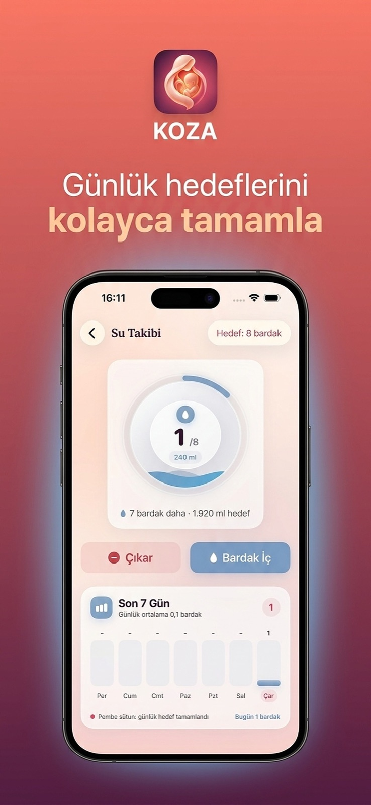
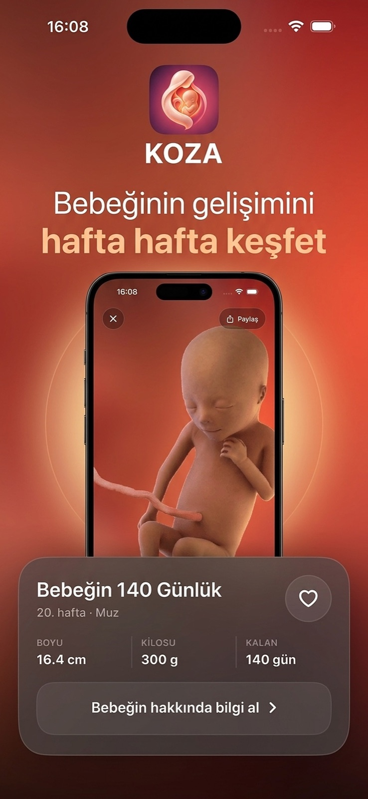
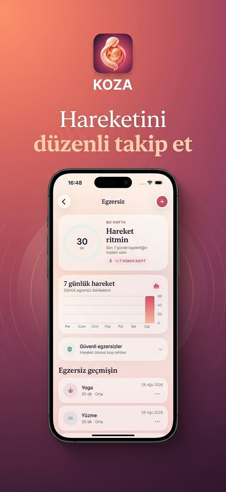
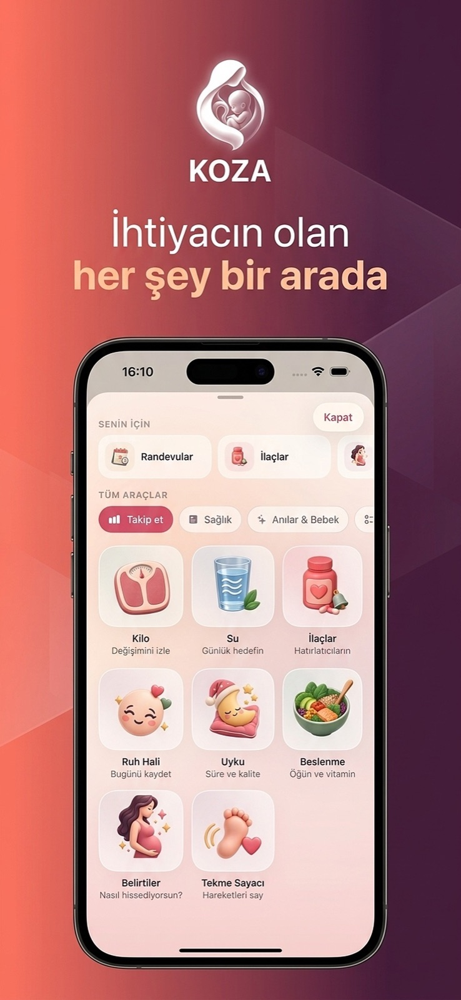

KOZA Hamilelik Takibi
KOZA Destek
Uygulama kullanımı, hesap, bildirim ve abonelik konularında yardım alın.
Nasıl yardımcı olabiliriz?
En çok ihtiyaç duyulan destek başlıklarına doğrudan ulaşın.
KOZA uygulamasından ekranlar
Bebek gelişimi, su takibi, hareket ve günlük araçlardan örnekler.




Sık sorulan sorular
Adımlar uygulama sürümüne ve cihaz ayarlarına göre değişebilir.
Gebelik haftamı nasıl güncellerim?
Profil veya gebelik ayarları alanından son adet tarihini ya da tahmini doğum tarihini güncelleyebilirsiniz.
Bildirimler gelmiyorsa ne yapmalıyım?
iPhone Ayarlar bölümünde KOZA bildirim iznini ve uygulama içindeki hatırlatıcıları kontrol edin. Bildirimler kolaylık amaçlıdır ve klinik izleme sağlamaz.
KOZA AI tıbbi tavsiye verir mi?
Hayır. KOZA AI genel bilgilendirme sunar. Tanı, tedavi veya kişisel tıbbi öneri yerine geçmez. Sağlık kararlarınızı sizi takip eden hekimle birlikte alın.
Hesap ve veri silme seçenekleri nerede?
Uygulamadaki Profil alanında hesap silme seçeneği bulunur. Veri saklama ve silme kapsamı için güncel Gizlilik Politikası'nı inceleyebilirsiniz.
Takip araçları tıbbi değerlendirme yapar mı?
Hayır. Su, kilo, hareket ve sancı araçları kişisel kayıt amacıyla sunulur. Gösterilen hedefler ve özetler tıbbi değerlendirme veya klinik takip değildir.
Aboneliğimi nasıl yönetebilirim?
Abonelikler Apple tarafından işlenir. iPhone Ayarlar bölümünde Apple Hesabı ve Abonelikler yolunu izleyerek planınızı yönetebilirsiniz. Uygulamayı silmek aboneliği iptal etmez.
Acil bir durumda KOZA kullanılmalı mı?
Hayır. Su gelmesi, kanama, hareket azalması, şiddetli ağrı veya endişe veren başka bir durumda uygulamayı beklemeden sağlık hizmetine başvurun.
Bir hata bildirirken ne yazmalıyım?
Sorunun kısa açıklamasını ve iOS sürümünüzü yazmanız yeterlidir. Parola, doğrulama kodu, ödeme bilgisi, kimlik bilgisi veya kişisel sağlık kaydı paylaşmayın.
Bizimle iletişime geçin
Teknik bir sorun için e-posta gönderebilirsiniz. Yanıt süresiyle ilgili garanti verilmez.
E-posta gönder